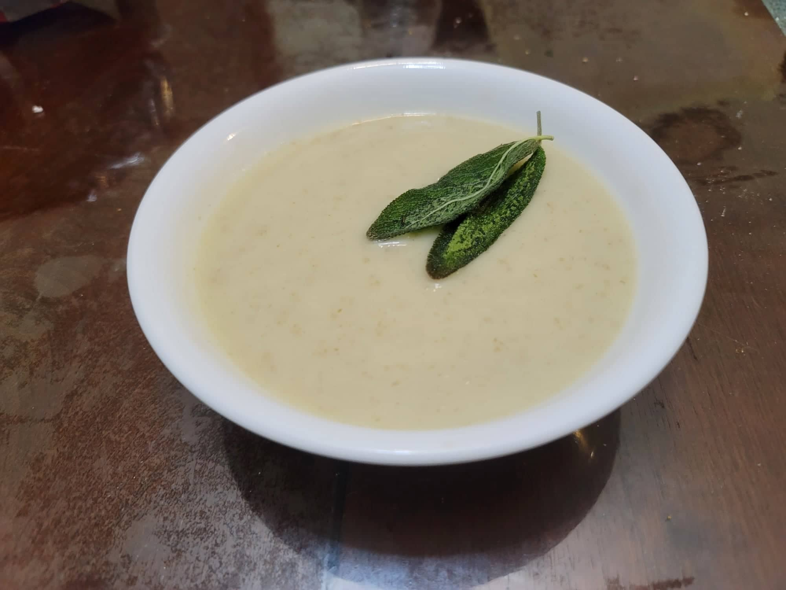

Sunchoke Soup

Ingredients:
Soup:
- 2 lb Sunchokes, roughly chopped
- 1 Leek, rinsed and finely chopped
- 1/2 cup Wild onions, chopped
- 2-4 tbsp Sunflower oil
- 5 cups Water or Vegetable broth
- 1 tsp Salt
Optional Fried Sage Garnish:
- Sage leaves
- 1 tbsp Sunflower oil
Instructions:
- Heat the oil in a large pot over medium heat. Add in the leek and onion and sauté until softened, about 5 minutes.
- Add in the sunchokes, water/broth, and salt. Bring to a boil and then reduce to a simmer. Let cook covered for 30 minutesor until the sunchokes are tender.
- Remove the pot from heat and blend using an immersion blender until completely smooth. Taste and add salt in desired.
- For the fried sage, heat the oil in a small pan over medium heat. Add the sage leaves and sauté until crispy, less then 2 minutes.
- Serve and garnish with the sage leaves if desired.